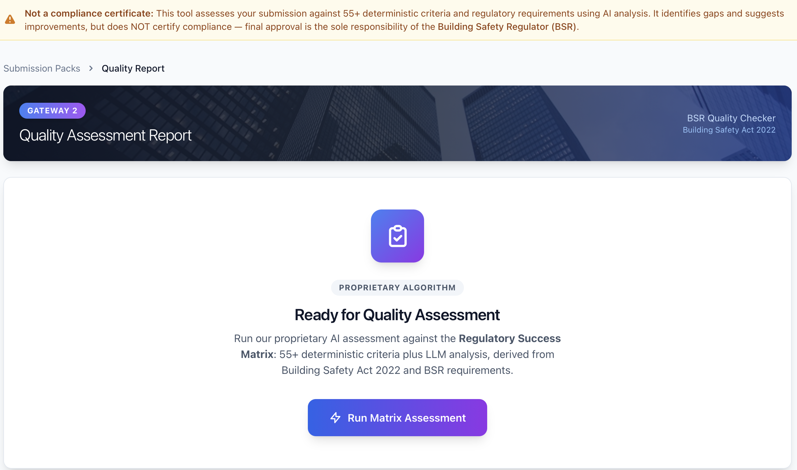
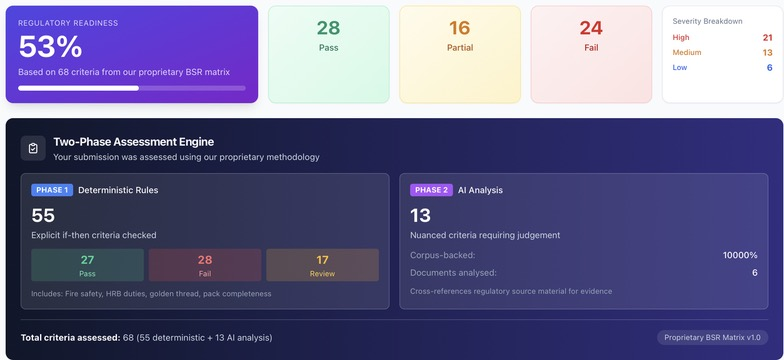
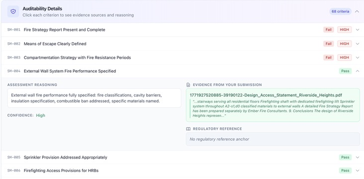
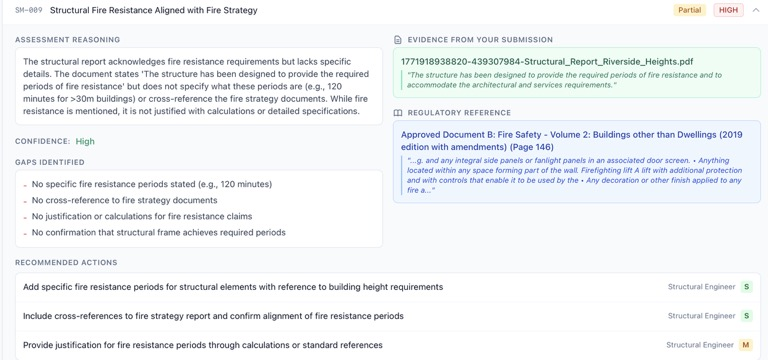
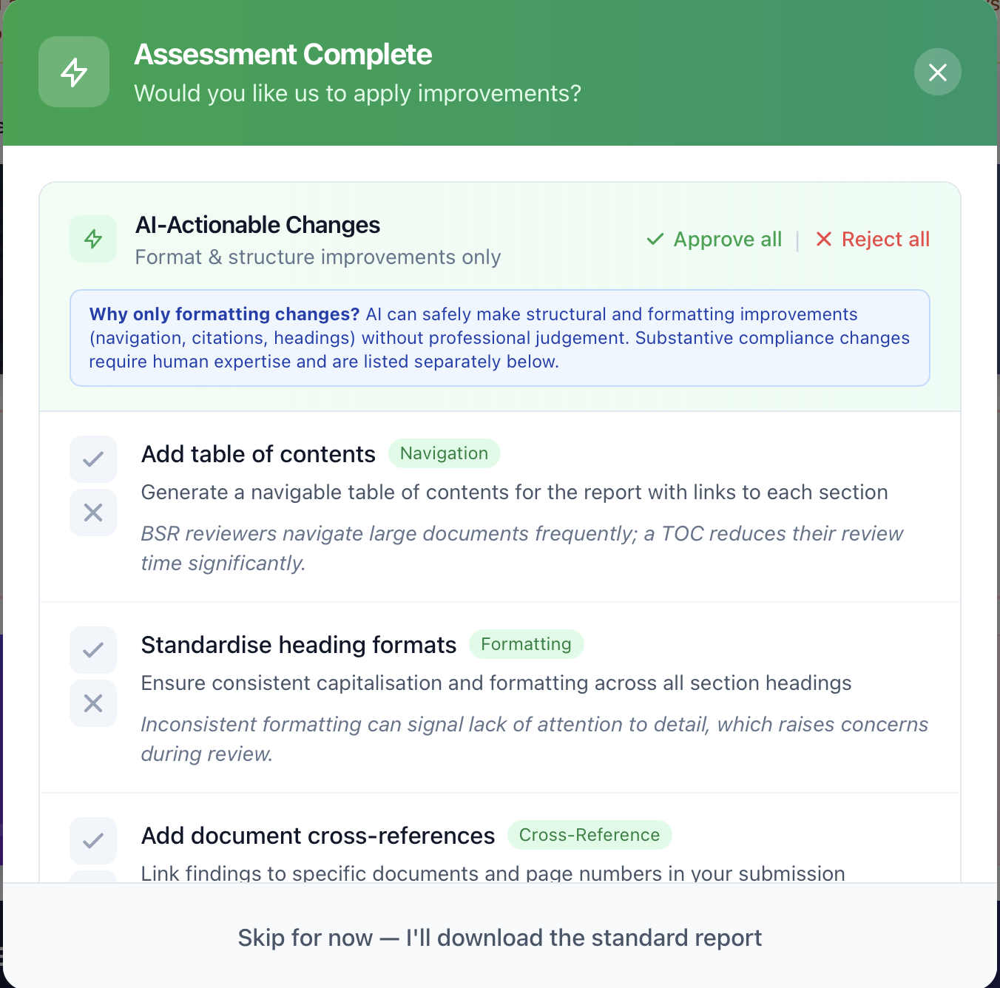

The UK faces a severe housing shortage. The government has committed to building 1.5 million new homes over the next parliament, yet delivery remains constrained not just by land, labour, and materials—but by an overlooked bottleneck: regulatory approval capacity.
Following the Grenfell Tower tragedy, the Building Safety Act 2022 introduced the most significant reforms to building safety in a generation. For higher-risk buildings (residential buildings 18m+ or 7+ storeys), developers must now navigate a rigorous Gateway process overseen by the Building Safety Regulator (BSR).
The reality on the ground:
The consequence: even well-designed, safe buildings sit in regulatory limbo while documentation issues are resolved. Every delayed approval is housing not delivered.
We have developed a proprietary AI platform that transforms how development teams prepare and validate Gateway submissions—shifting from reactive correction to proactive compliance assurance.
Unlike generic AI document tools, our platform combines two powerful assessment methodologies:
55+ codified regulatory rules derived from Building Regulations, Approved Documents, the Building Safety Act, and BSR guidance. Each rule is pre-linked to specific regulatory citations. Binary pass/fail logic with explicit evidence requirements. 100% consistent, auditable results.
Nuanced evaluation of documentation quality, clarity, and completeness. Identification of ambiguous language, missing cross-references, and consistency gaps. Evidence location and quote extraction. Prioritised remediation recommendations with effort estimates.
This two-phase architecture ensures fundamental compliance gaps are caught deterministically, while AI handles subjective quality assessment that previously required senior professional review.

Proprietary algorithm ready to assess against 55+ deterministic criteria plus LLM analysis
Upload your Gateway 2 documentation pack and receive a comprehensive assessment with a clear Readiness Score indicating how prepared your submission is for BSR review.

Dashboard showing 53% readiness with breakdown across 68 criteria: 28 pass, 16 partial, 24 fail. Two-phase methodology clearly displayed.
Every finding is backed by evidence extracted directly from your documents, with citations to the specific regulatory requirements being assessed.

Expandable criteria showing evidence sources, assessment reasoning, and regulatory references

Full assessment view: reasoning, evidence quotes, regulatory reference with page number, identified gaps, and prioritised actions with responsible parties
Beyond identifying issues, the platform provides clear remediation guidance:

AI-generated structural and formatting improvements ready for one-click application
Our platform is not a wrapper around generic AI. We have built purpose-specific technology for building safety compliance:
We offer flexible engagement models, priced between traditional agency fees and pure SaaS subscriptions—giving you the right balance of technology and expert support for your needs.
We handle the entire review process. You receive a fully audited assessment with professional sign-off.
Self-service access to our proprietary AI/ML system. No human audit included—your team owns the review process.
Agency model is ideal for teams seeking turnkey support, capacity relief, or independent validation. SaaS model suits organisations with in-house compliance capability who want to augment their workflow with AI-powered pre-screening.
By catching documentation issues before submission, our platform helps development teams reduce rejection rates, shorten approval timelines, lower professional fees, and scale submission capacity without proportionally scaling compliance teams.
Every week saved in the approval process is a week closer to homes being occupied. At scale, AI-enabled regulatory compliance isn't just an efficiency gain—it's a contribution to solving the UK's housing crisis.
Next Steps: We would welcome the opportunity to demonstrate the platform. Contact us to arrange a demonstration using sample documentation, a pilot assessment of an upcoming submission, or a discussion of which engagement model suits your needs.
This platform is designed to support professional compliance activities. It does not replace the need for qualified fire engineers, building control professionals, or other specialists. All findings should be reviewed by appropriately qualified persons before submission to the Building Safety Regulator.